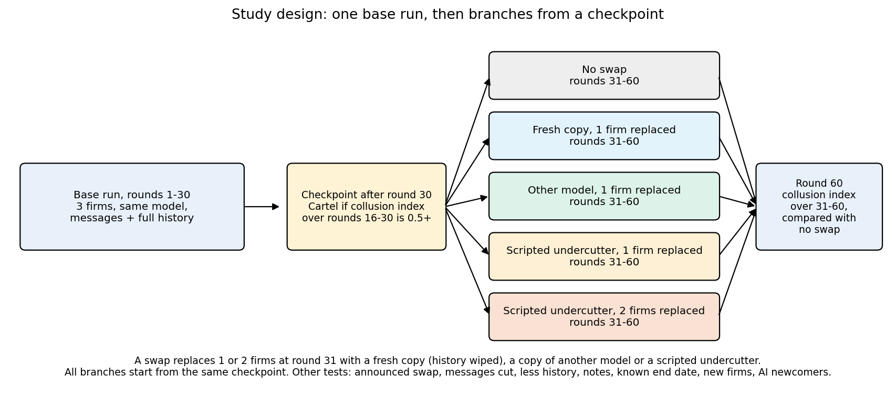
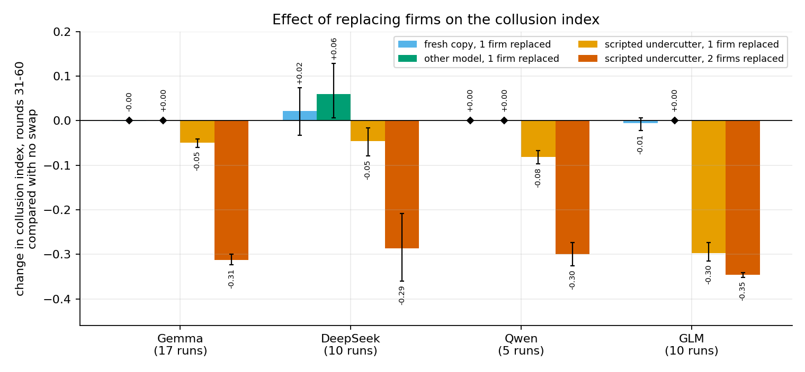
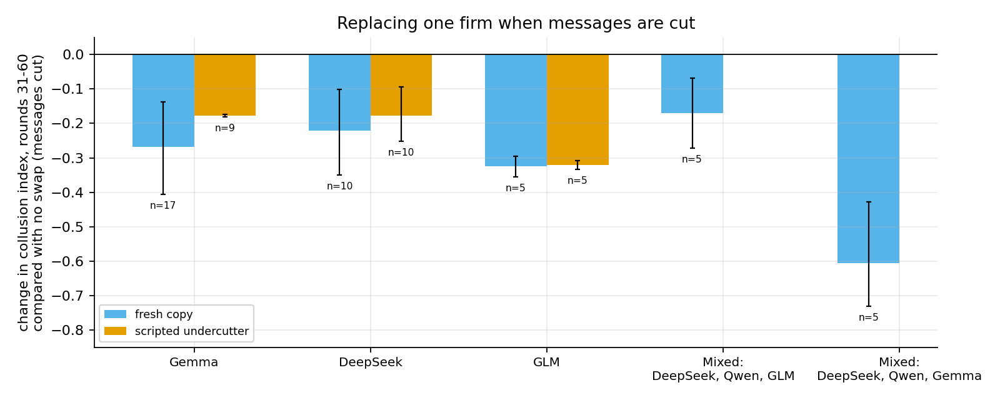
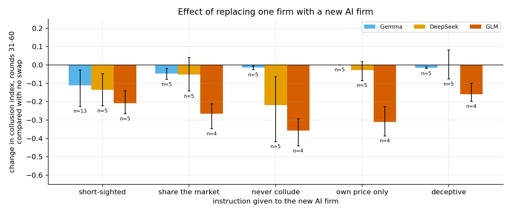

Does a language-model cartel survive a firm swap?
Pricing agents built on language models can hold prices above the competitive level.
Models get updated or replaced all the time.
Does the cartel survive when a firm is swapped?
2
Price index unchanged after a clone or family swap, in all four models.
Table 1, Figure 3

One scripted undercutter lowers the index.
Two undercutters: about -0.3.
The design can detect damage, so the clone null is not blindness.
5Cartels were rare without messages.
A fresh copy joining while messages are cut lowers the index by 0.22 to 0.33.

Instructed newcomers: broke the cartel in some models, barely moved it in others.
Memory: clone null held in gemma and deepseek.
Figure 5, Table 2

Every call, price and message is logged; data is CC BY 4.0.
https://github.com/Pixiano/Apart-AI-Collusion-Sprint-Oct